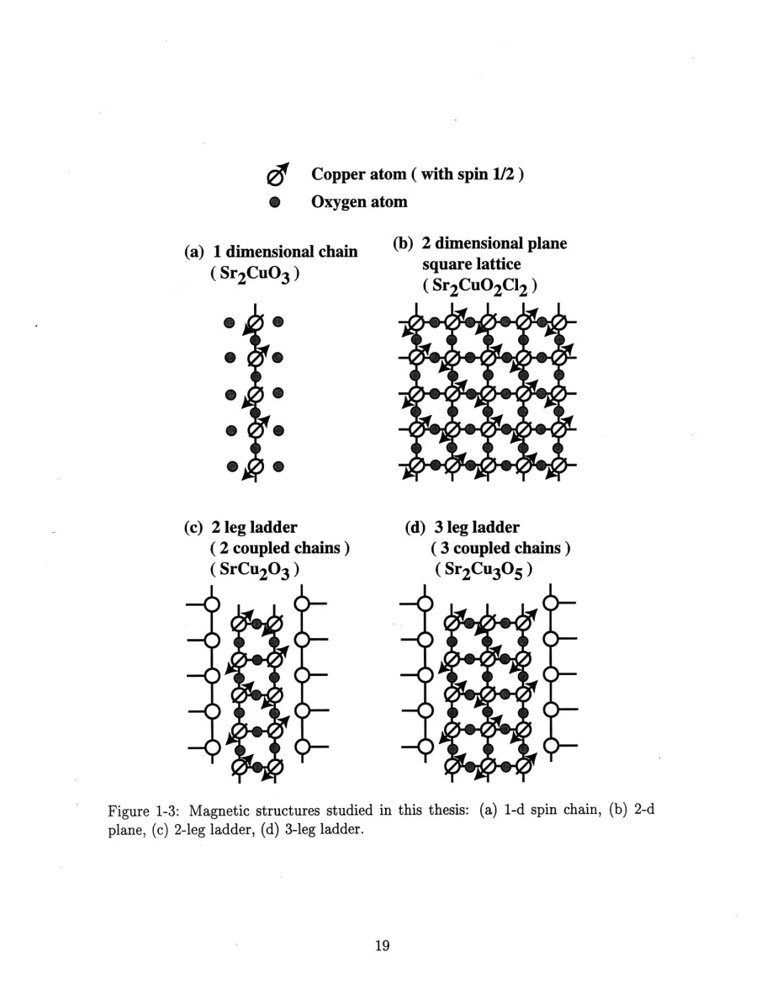
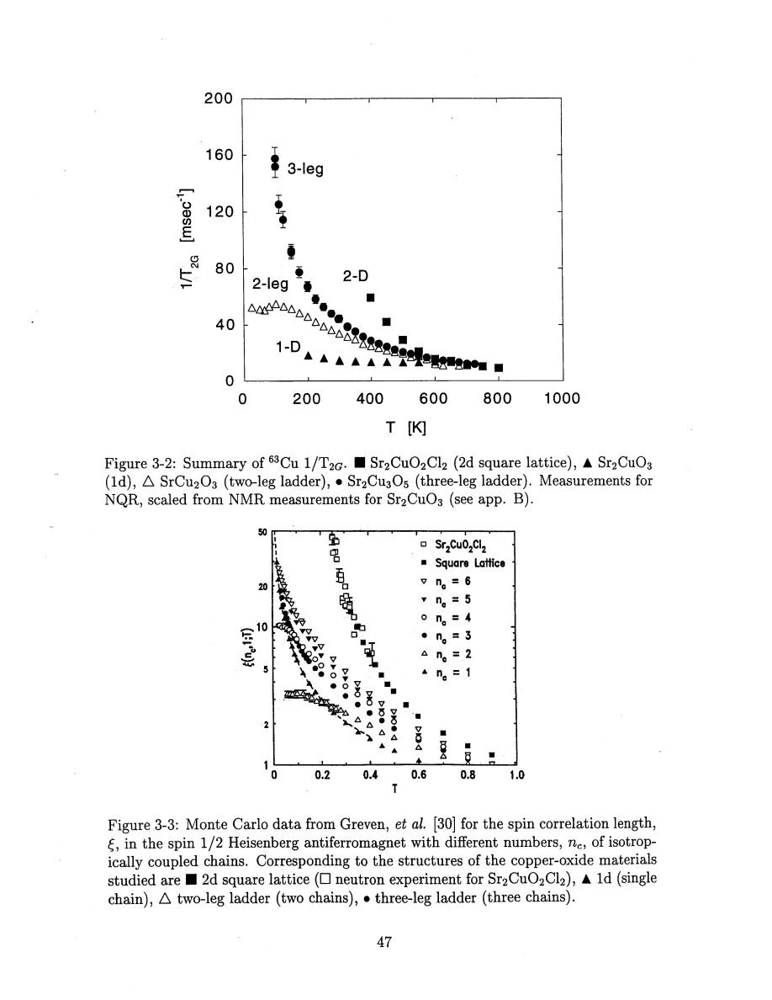

Thurber · supplied source 1999 · chapter unit
Exchange paths, orbitals and dimensionality
Magnetic dimensionality is set by the dominant exchange network, while weak frustrated links and quantum leg parity change its limits.
The question: Why do chemically similar copper oxides have different magnetic ground states?
Before you start: the terms you need
- Spin-1/2 Heisenberg antiferromagnet: neighboring electron spins interact through J Sᵢ·Sⱼ with J>0.
- Hyperfine coupling: the electronic spin polarization produces a local magnetic field at a nucleus.
- Wave vector q: distinguishes uniform spin fluctuations near q=0 from staggered fluctuations near the antiferromagnetic vector Q.
- Correlation length ξ: a distance over which staggered electron-spin correlations remain appreciable.
- NMR/NQR: applied-field magnetic resonance versus resonance in the electric field gradient with no applied static field.
- Historical scope: these are experiments and interpretations reported in the supplied 1999 thesis, not a current review of quantum-spin transport.
See → explain → check
Follow the idea in 3 pictures.
Picture 1 / 3
The single-chain network
Look for: Follow the strong leg bonds along Cu sites, without adding a transverse rung.
Swipe across the picture to read every label, or enlarge it below.
- Cu
- Strong chain bond J
- Chain O
- Apical O
Teaching schematic. Sr₂CuO₃ chain geometry; apical oxygen lies outside the chain and couples mainly to one Cu. J/kB≈2200 K and the much smaller interchain interactions are separate scales.
A crystallographic layer can contain nearly independent magnetic chains.
Picture 2 / 3
Two and three are not a smooth classical interpolation
Look for: Compare the two-leg singlet example with the odd-leg rung count.
Swipe across the picture to read every label, or enlarge it below.
- Two-leg rung
- Three-leg rung
Teaching schematic. Strong-rung argument for isolated antiferromagnetic ladders. It is not a literal product state for all coupling ratios.
Quantum parity matters before weak interladder bonds are considered.
Check the original: PDF p. 134 · PDF p. 135 · PDF p. 164
Picture 3 / 3
Orbitals determine exchange paths
Look for: A straight Cu–O–Cu path shares an oxygen orbital; a right-angle path uses different orbitals.
Swipe across the picture to read every label, or enlarge it below.
- Cu d hole
- O pσ hybridization
- Strong 180° exchange
Teaching schematic. Superexchange mechanism, not a calibrated orbital density map. Weak 90° paths can be frustrated and must not be drawn as equivalent strong rungs.
Local bonding sets strong and weak links.
Explain it back.
Try answering aloud before opening the explanation.
Why is SrCuO₂ not automatically a two-leg ladder just because two chains lie nearby?
Its interchain paths are weaker frustrated near-90° bonds, while the ideal two-leg ladder has antiferromagnetic rungs. Spatial proximity alone does not determine the exchange graph.
What is being tested when an oxygen hyperfine tensor is decomposed into isotropic and axial pieces?
The isotropic contact contribution and anisotropic dipolar contribution constrain spin density in s and p orbitals, under the stated radial-integral and calibration assumptions.
Go deeper Follow the full argument
Follow bonds, not the outside shape of the crystal
Each material is a three-dimensional solid, but that fact does not determine its magnetic dimensionality. The thesis follows the strongest exchange paths within copper-oxygen structural units. A single Cu–O chain, a square CuO₂ layer, and two or three coupled chains create distinct Heisenberg models even though they share CuO₄ local coordination. The nuclei sit in those structures and sense their consequences. The summary plots compare copper 1/T₁ and 1/T₂G across the geometries, but those curves have first been put into compatible NMR/NQR conventions. A chain can have a rapidly growing correlation length with relatively weak changes in a measured rate because dimensional factors enter the connection between susceptibility and relaxation. A two-leg ladder has a gap and finite limiting correlation length; the three-leg crystal develops much stronger growth on cooling. The preliminary comparison is a map of questions, not a replacement for the individual material analyses.
Why a straight copper-oxygen bond is strongly antiferromagnetic
Cu²⁺ has one hole in its 3d shell, selected mainly into the 3dₓ²₋ᵧ² orbital by the local crystal field. Its lobes point toward the neighboring oxygens, allowing hybridization with oxygen 2pσ orbitals. When a Cu–O–Cu bond is nearly 180°, both Cu sites hybridize with the same oxygen orbital. The Pauli constraint and virtual electronic motion favor opposite spin orientations and a strong antiferromagnetic exchange. For a bond near 90°, the two copper sites couple primarily through different oxygen orbitals; the thesis expects a much weaker interaction, often ferromagnetic in these structures. Paired weak links can also be frustrated by a strong antiferromagnetic bond between the spins they connect. Therefore two neighboring structural chains need not become a single strongly coupled ladder. Distinguish the straight antiferromagnetic rung of the ideal ladder from the frustrated near-right-angle connection in SrCuO₂.
PDF p. 48 · PDF p. 49 · PDF p. 50 · PDF p. 51 · PDF p. 57 · PDF p. 58
Use tensor measurements as checks of this chemical picture
The orbital account is constrained by the quadrupole tensor and by anisotropic magnetic shifts, rather than asserted solely from a cartoon. The electric field gradient has an on-site hole contribution plus a lattice contribution modified by an antishielding factor. An ionic point-charge sum is useful for symmetry and scale, but is not an exact electronic-structure calculation. Copper orbital shifts are large and anisotropic because of its unfilled d orbital. A dipolar contribution to an oxygen hyperfine tensor is traceless, whereas an s-orbital contact contribution is isotropic. Separating these components helps estimate where unpaired spin density resides. In Sr₂CuO₂Cl₂ the later analysis estimates a substantial oxygen 2p contribution, supporting the strong covalency behind superexchange. This quantitative estimate uses orbital radial integrals and hyperfine calibration. The teaching drawing represents the exchange topology and orbital argument; it does not show an experimentally measured static spin configuration.
PDF p. 51 · PDF p. 52 · PDF p. 53 · PDF p. 54 · PDF p. 55 · PDF p. 111 · PDF p. 112
Translate the mathematics Essential equations and their meaning
H = Σ⟨ij⟩ Jᵢⱼ Sᵢ·Sⱼ
Symbols: Jᵢⱼ: exchange energy on a bond; Sᵢ: spin-1/2 operator.
Topology and coupling hierarchy define the low-dimensional model; extra bonds determine the crossover out of it.
Vzz + Vxx + Vyy = 0
Symbols: Vαα: principal electric-field-gradient components at the nucleus.
In the local electrostatic tensor convention used here, the trace vanishes. Tensor symmetry is a structural check; it does not uniquely determine the on-site hole count.
Read the evidence Guided original source pages

PDF p. 19

PDF p. 47
What the evidence supports—and where it stops
- The orbital argument is a qualitative superexchange picture; numerical spin transfer depends on hyperfine and radial-integral estimates.
- Teaching arrows identify modes or bond tendencies, not static long-range order in all geometries.
Source version, reading coverage and preservation
Read all extracted substantive text on one-based PDF pages 14–204, including chapters 1–8 and appendices A–C; checked the title and abstract and visually inspected 66 full rendered pages for cited figures, formulas, tensor conventions and extraction ambiguities. PDF page numbers match the printed body page numbers.
Reviewed body pages: 14, 15, 16, 17, 18, 19, 20, 21, 22, 23, 24, 25, 26, 27, 28, 29, 30, 31, 32, 33, 34, 35, 36, 37, 38, 39, 40, 41, 42, 43, 44, 45, 46, 47, 48, 49, 50, 51, 52, 53, 54, 55, 56, 57, 58, 59, 60, 61, 62, 63, 64, 65, 66, 67, 68, 69, 70, 71, 72, 73, 74, 75, 76, 77, 78, 79, 80, 81, 82, 83, 84, 85, 86, 87, 88, 89, 90, 91, 92, 93, 94, 95, 96, 97, 98, 99, 100, 101, 102, 103, 104, 105, 106, 107, 108, 109, 110, 111, 112, 113, 114, 115, 116, 117, 118, 119, 120, 121, 122, 123, 124, 125, 126, 127, 128, 129, 130, 131, 132, 133, 134, 135, 136, 137, 138, 139, 140, 141, 142, 143, 144, 145, 146, 147, 148, 149, 150, 151, 152, 153, 154, 155, 156, 157, 158, 159, 160, 161, 162, 163, 164, 165, 166, 167, 168, 169, 170, 171, 172, 173, 174, 175, 176, 177, 178, 179, 180, 181, 182, 183, 184, 185, 186, 187, 188, 189, 190, 191, 192, 193, 194, 195, 196, 197, 198, 199, 200, 201, 202, 203, 204. Bibliography pages 205–212 were not independently verified against the cited external works. The guide explains final results and assumptions rather than reproducing every algebraic step, electronics part number or data point. Remaining rendered pages not listed in the private review were not claimed as visually read.
Source SHA-256: aca6c34f95675f0fb188d45f9148bacce2e832f0956949025eae42f1e1abf618. Original file bytes preserved locally, and in this room’s original download.
Thesis - Thurber - 1999 - O and Cu NMR spin dynamics in low dimensional antiferromagnets.pdf